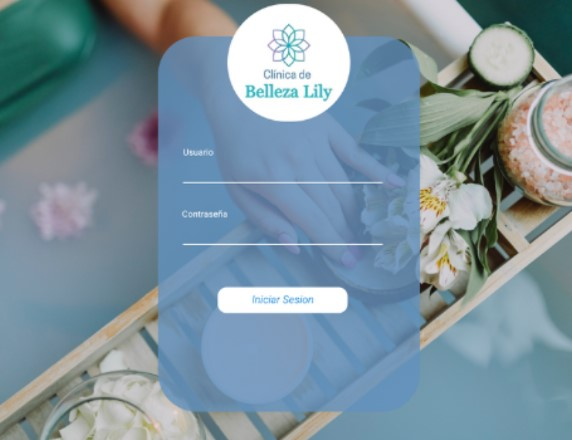
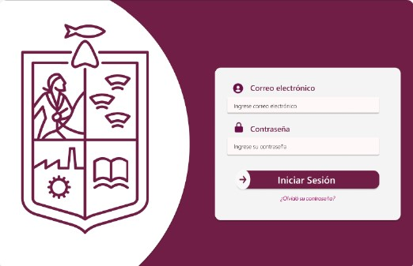

Mis Proyectos
Aplicación Web para la publicidad de Sueños, Esperanzas y Risas.
Al mismo tiempo, permite la administración de su contenido de manera centralizada. A través de una interfaz amigable e intuitiva, los administradores pueden crear, actualizar y eliminar contenido de forma rápida.

Aplicación Web responsiva diseñada para facilitar la publicidad y administración de servicios.
Permite a los usuarios gestionar agendas y programar citas, asegurando un control eficiente del tiempo y recursos.
Además, la plataforma ofrece herramientas para organizar y coordinar al personal, mejorando la eficiencia en la asignacion de tareas y en la comunicación entre los equipos de trabajo.
Aplicación Web responsiva con la implementación de web scraping en redes sociales que permite la recopilación de datos de diversas plataformas de manera automática y eficiente.
Esta aplicación se desarrolló con el fin, de monitorear y extraer información relevante, como tendencias, interacciones y comentarios, facilitando la creación de informes de seguimiento.
Estos informes proporcionan un análisis detallado y gráfico del comportamiento y de las preferencias de los usuarios.
